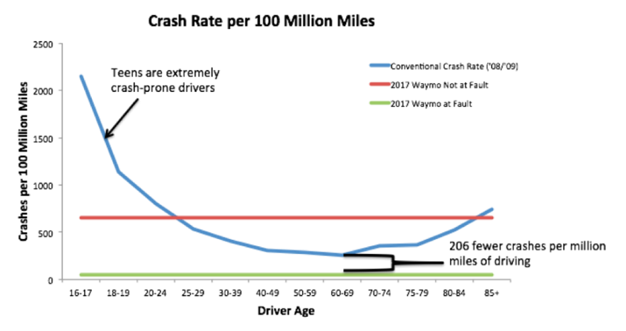

Table of contents |
|---|
| Abstract |
| What is Artificial Intelligence |
| Ai in Autonomous Vehicles |
| AI in Planes |
| Ai in traffic management |
| Ethical and_social problems |
| Conclusion |
| References |
Artificial Intelligence is rapidly evolving the transportation systems globally by improving efficiency, safety, and sustainability. This article will explore and explain what AI is and how it is implemented into transport systems. The main systems we will focus on are autonomous vehicles, how AI is used in planes, and smart traffic management systems. We will also discuss the ethical and social problems that come with implementing AI into the transport sector (see IBM, 2024).
Artificial intelligence (AI) is technology that enables computers and machines to simulate human learning, comprehension, problem solving, decision making, creativity, and autonomy (IBM, 2024). AI systems operate using machine learning, which helps algorithms to improve their performance by analyzing data. In transportation, AI helps automate repetitive processes and predict outcomes.
AI works by collecting and processing large amounts of data, this data could be received from many sources such as sensors or cameras. It can then use this data to analyse it and find patterns. Then with this AI could predict outcomes or even make real-time adjustments.
Autonomous Vehicles are one of the biggest upcoming uses of AI in transportation. These vehicles rely on specific AI algorithms made for driving. Autonomous cars rely on sensors, actuators, complex algorithms, machine learning systems, and powerful processors to execute software. Autonomous cars create and maintain a map of their surroundings based on a variety of sensors situated in different parts of the vehicle (Synopsys, 2024). Currently major companies such as Tesla and Waymo are leading the Autonomous vehicle department. Using there AI systems that learn and evolve based on real world data collected by sensers on many cars which add up to millions of miles driven.
One benefit of Autonomous Vehicles is that they will help decrease traffic accidents caused by human error, which is responsible for 94% of road crashes (ORSA, 2024). The graph shown below backs up the claim that autonomous vehicles are safer, at the ages 60-69 there are 206 fewer crashes per million miles driven.

According to (Tesla, 2024), Tesla uses Autopilot, which is based on a deep neural network, sees and senses the surroundings around the vehicle by utilizing cameras and ultrasonic sensors. This powerful sensor and camera system provides drivers with a level of awareness of their surroundings that would be impossible for a driver to achieve on their own. In a handful of milliseconds, a powerful onboard computer evaluates these signals to assist in making your driving safer and less stressful. This sort of artificial intelligence is becoming more common in cars, but Tesla’s, at the moment represent the best implementation of driverless technology in a car. They have the most advanced driver’s assistance software. Because of the success of artificial intelligence, other big companies, such as BMW and Mercedes, have started to develop driving assistance artificial intelligence to compete with Tesla. Tesla’s autopilot, or "almighty autopilot," as Tesla would put it, is a combination of two parts: the first, which algorithmically controls the car and monitors its surroundings, while the second one only analyses the route and how to get to the destination.
Ai is also causing big changes in the aviation industry as well. Ai is used in planes for various functions such as flight planning, maintenance and autopilot. Commercial airlines and military aviation have already begun embracing AI, using it to streamline routes, cut harmful emissions, improve customer experience, and optimize missions (Hilderman, 2022). Ai systems analyse real time data, weather, air traffic and current aircraft conditions to help plan the most optimal and safe route. Another use of Ai is maintenance on planes. AI can process data collected from aircraft sensors, engines, hydraulic systems, avionics, and other critical components to detect anomalies in real-time (BuildPrompt, 2024). This means AI can detect potential issues before they cause failures which could be catastrophic.
AI has a major role in improving the efficiency of traffic management. This helps to reduce congestion, which also decreases CO2 emissions from cars in urban areas. Traffic systems that use AI receive data from cameras and sensors to predict traffic and optimize routes that are the most efficient. Taipei, the capital city, is a prime example of Taiwan’s AI-driven transformation, having already implemented AI for traffic management (Forbes Technology Council, 2024).
Artificial intelligence is definitely transforming the transport industry, by giving us alternatives that improve efficiency and safety. The potential of AI is limitless, and I believe is the answer to the future of transportation. However, as we implement Ai more into our daily lives, we also need to ensure that the data is safe and that there is no bias in the algorithms. By addressing these challenges responsibly, AI can lead the way to a new era transportation globally.
IBM, 2024. What is artificial intelligence (AI)? [online] Available at: https://www.ibm.com/topics/artificial-intelligence [Accessed 4 December 2024].
Synopsys, 2024. What is an Autonomous Car? [online] Available at: https://www.synopsys.com/glossary/what-is-autonomous-car.html [Accessed 4 December 2024].
Tesla, 2024. Autopilot. [online] Available at: https://www.tesla.com/support/autopilot [Accessed 4 December 2024].
ORSA, 2024. Reducing Driver Error Accidents. [online] Available at: https://www.orsa.org.uk/reducing-occupational-road-risk/reducing-driver-error-accidents/ [Accessed 4 December 2024].
RMI, 2024. How Safe Are Self-Driving Cars? [online] Available at: https://rmi.org/safe-self-driving-cars/ [Accessed 4 December 2024].
Hilderman, V., 2022. AI in the Sky: How Artificial Intelligence and Aviation Are Working Together. [online] Avionics. Available at: https://interactive.aviationtoday.com/avionicsmagazine/may-june-2022/ai-in-the-sky-how-artificial-intelligence-and-aviation-are-working-together/ [Accessed 4 December 2024].
BuildPrompt, 2024. Predictive Maintenance in Aviation and the Role of AI in Reducing Downtime. [online] Available at: https://buildprompt.ai/blog/predictive-maintenance-in-aviation-and-the-role-of-ai/ [Accessed 4 December 2024].
Forbes Technology Council, 2024. AI Around The Globe: How Other Nations Are Ahead Of The AI Curve. [online] Available at: https://www.forbes.com/councils/forbestechcouncil/2024/07/24/ai-around-the-globe-how-other-nations-are-ahead-of-the-ai-curve/ [Accessed 4 December 2024]